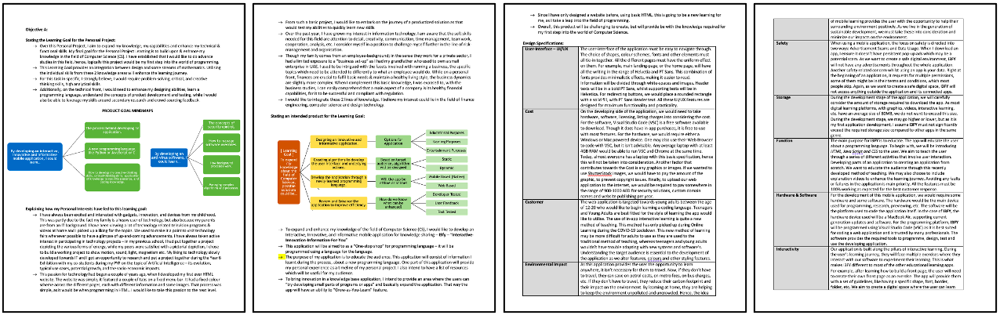
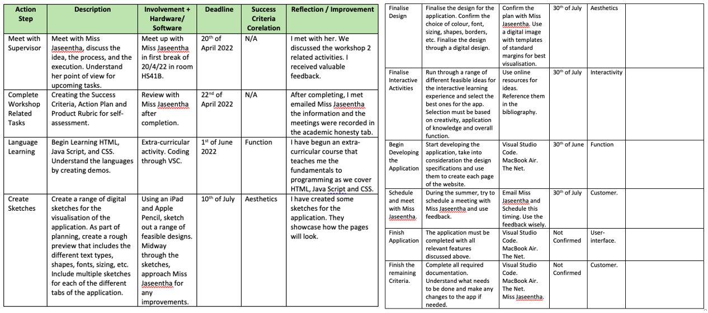

The Prelude
Talking about everything before the creation of the this platform. From action plans to his background.
350 Views
Background
Realizing an outcome to the idea involves the following key steps:
From interactions with family & friends who are in the IT field, I gathered that typically in projects there are different people who perform the above activities, and they have different skills and capabilities as well. However, when I contextualized the above process into what I want to achieve in my personal project, I quickly realized I will have to play all these roles but to a lesser extent than in a professional set-up.
The Project:
I wanted to do something different, very much in the technology domain. So, I felt why should not I learn some new skills and put the same into use through the project.
Idea: I decided on “a basic web application” that can be “an easy guide for new learners” such as me in the “field of web development.” Having the idea itself was not the end of the activity. I had to then expand it to be more specific of what I wanted to incorporate in the application. I put on my thinking hat and started listing all things which I felt I would like an application to have – from basic concepts to commands to seeing some things in action, ability to try something and get it confirmed. Slowly my idea was taking shape. I combined all my loose thoughts together into my criteria documentation and at the end I had a strong list of to-do a.k.a “documented requirements.”

Analysis: Now that I had a strong view of what I wanted, I had to start thinking of how I go about achieving it. I had to consider all aspects of my requirements both from my current aptitude, available time and then ability to match my expectations. I did a bit of reading and discussions with my friends and from a first thought of developing a mobile application using Python, I had to recalibrate myself and decided on HTML & CSS with a bit of JavaScript. This was a good balance for me as I could start building on something I knew a bit of from before, but more importantly, I could plan well towards the goal. To build my plan, I had to understand what I had and what I needed to do, so I had to find a good coach who could teach me the technologies needed and then I could use the learnings to work on my application. I then worked with my coach to develop my first plan of action over the summer break so that I could meet the timelines for the project.  Design: With the “What,” “Who” & “When” of the project addressed, I then had to start concentrating on the “How” my project would look like. This was a remarkably interesting phase of project and an exciting one as well as I could get to really spend some time sketching. I started off with a few false starts going from logo design to screen grabs but eventually settled in the flow. I began with a simple list of “topics” for my website on what all I wanted to include in it. I then started grouping the topics in a logical order and placed them on the site. I then had to think of the flows between the topics. There were some interesting debates I had with my coach in the sequencing of my topics. We also agreed that there must be some features for interaction and feedback. With all these aspects, we finally got a structure for our website.
Please visit "UI Design" for more specifics along with some insights on the tools I used in the journey.